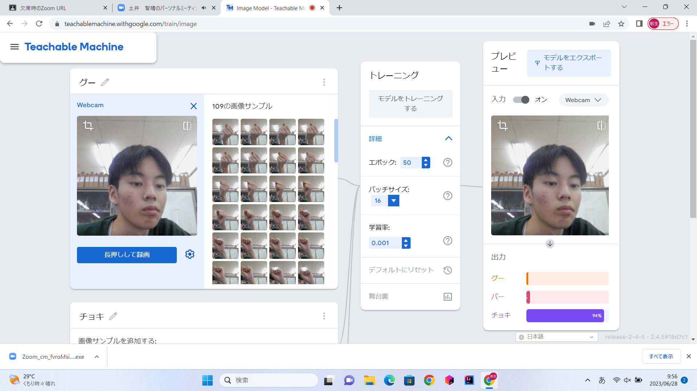
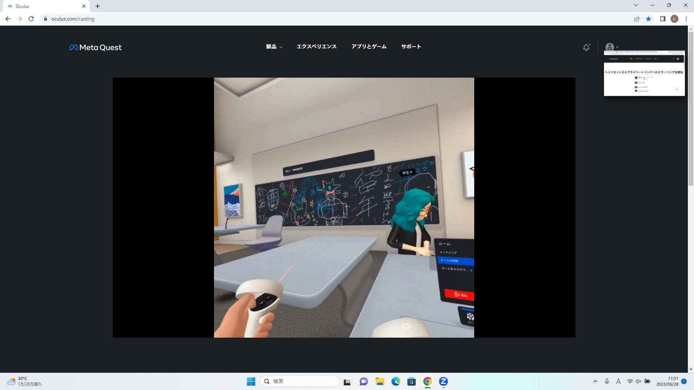

第2週目
2-1 １週目のレポートをHTMLで作る
１週目のレポート
1.内容
Meimechim/web2023のCodeの中のrep01をクリックし、一週目のレポートのファイルを開く。鉛筆マークをクリックして一週目のレポートを編集する。
2.感想
編集しているのはhtmlだが、内容、感想、yourIDの部分のみで、どこがどうなっているのかよくわかりません。そのため、間違えて変なところを消してしまわないか不安でした。
2-2 機械学習体験

1.内容
まず、人工知能や機械学習についての説明を受け、次に、TeachableMachineを体験する。TracnableMachineに入った後、画像プロジェクトを選択する。そのあと、3つクラスを作り、それぞれのクラスにグー、チョキ、パーの手の画像を１５０枚ほど保存する。そして、トレーニングをクリックして学習が始める。
2.感想
人工知能についての説明にとても関心を持ちました。機械学習や深層学習について詳しく理解したいと感じました。
2-3 VR（バーチャルリアリティー：Virtual Reality）会議室の体験

1.内容
ゴーグルを顔に取り付け、コントローラーを手に持つことで、バーチャル空間の中で操作することができる。カーディガンの設定を行った後、PCとミラーリングし、自分のオフィスのデスクの設定とデスクホワイトボードの設定を行う。そのあと、会議室に入り、会議室用のホワイトボードの設定を行う。この時、写真を撮った。
2.感想
バーチャルリアリティーの技術がコミュニケーションやゲームの他にどのようなことに利用されているのか気になりました。